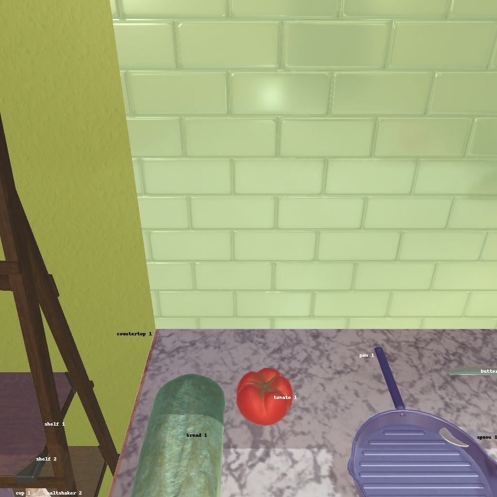
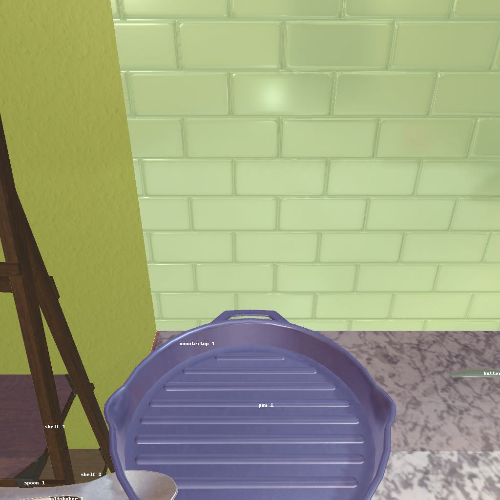

---------------------------------------------------------task: 16---------------------------------------------------------
--------------------------------------------------------------------------------------------------------------------------------------------------------------------
--------------------------------------------------------------------------------------------------------------------------------------------------------------------
Step:--------------------------------------------------------------------------7-------------------------------------------------------------------------------
----------------------------------------
VLM Prompt:
Image1:
Image2:
**Instruction**
1. Analyze the provided image to identify all visible household objects, focusing on those relevant to the task description "put a cool pan in sinkbasin."
2. Use the analysis of the image and the task hint "The agent must find an object of the desired type, pick it up, go to a fridge, cool the object with the fridge, then find the correct location to place it, and put it down there. The agent does not need to use the fridge button or open the fridge to cool the object, and the agent just needs to do action that is "cool the object with the fridge"." to answer the question: what is the most reasonable action in the choices for the task description "put a cool pan in sinkbasin"?
4. Decide and write the answer using the template: The answer is: (i): , where i is the real number. If there is no desired object in the image, search every place based on **Initial Observation** to find the object. And if no one is exactly correct, choose a similar answer.
**Initial Observation**
You are in the middle of a room. Looking quickly around you, you can see cabinet (1-9), countertop (1-3), drawer (1-9), stoveburner (1-4), microwave (1), sink (1), fridge (1), toaster (1), coffeemachine (1), sinkbasin (1), shelf (1-3), garbagecan (1)
**Answer Choices**
(1): go to cabinet 1
(2): go to cabinet 2
(3): go to countertop 2
(4): go to drawer 1
(5): go to drawer 2
(6): go to drawer 3
(7): go to drawer 4
(8): go to stoveburner 1
(9): go to drawer 5
(10): go to stoveburner 2
(11): go to stoveburner 3
(12): go to stoveburner 4
(13): go to cabinet 3
(14): go to cabinet 4
(15): go to microwave 1
(16): go to cabinet 5
(17): go to cabinet 6
(18): go to cabinet 7
(19): go to sink 1
(20): go to toaster 1
(21): go to coffeemachine 1
(22): go to cabinet 8
(23): go to drawer 6
(24): go to drawer 7
(25): go to drawer 8
(26): go to sinkbasin 1
(27): go to shelf 1
(28): go to shelf 2
(29): go to countertop 3
(30): go to shelf 3
(31): go to drawer 9
(32): go to cabinet 9
(33): go to garbagecan 1
(34): put pan 1 in/on countertop 1
(35): examine pan 1
(36): examine countertop 1
**Answer**
Let's think step by step by following the instructions.
----------------------------------------
----------------------------------------
Original Response:
First, we need to identify the pan to be put in the sink basin. In Image 1, we can see a pan labeled as "pan 1" located on the countertop, which aligns with the task description of identifying a pan. The task also specifies that the pan needs to be cool, so we can assume that the pan is already cool or that we need to cool it with the fridge based on the task hint.
Now, we need to determine the most reasonable action from the provided choices to complete the task, which is to "put a cool pan in sinkbasin." Since the pan is already visible on the countertop, we do not need to search cabinets or drawers for it. The next logical step would be to take the pan to the sink basin. The sink basin is not visible in the images, but based on the initial observation, there is a "sinkbasin (1)" present in the room.
Therefore, the most reasonable action to complete the task is to take the pan from the countertop to the sink basin. However, there is no option provided explicitly stating to "take pan 1 to sinkbasin 1." Among the choices, the closest action related to the pan and completing the task is to examine the pan or put the pan on the countertop, but neither directly achieves the task of placing the pan in the sink basin.
Since the task requires us to put the pan in the sink basin and none of the choices directly state this action, we must choose a similar answer that involves the pan.
The answer is: (34): put pan 1 in/on countertop 1, with the understanding that the agent will need to pick up the pan from the countertop and then proceed to place it in the sink basin, which is not explicitly stated in the answer choices.
----------------------------------------
----------------------------------------
>>> Refine Original VLM Response and Get Pure Action: put pan 1 in/on countertop 1, with the understanding that the agent will need to pick up the pan from the countertop and then proceed to place it in the sink basin, which is not explicitly stated in the answer choices
----------------------------------------
-----------------------------------------------------------------
Running time: 22.569610834121704 seconds
Total Money: 7.623810000000001
-----------------------------------------------------------------
-----------------------------------------------------------------
Text Observation:Nothing happens.
-----------------------------------------------------------------
UNSUCCEED